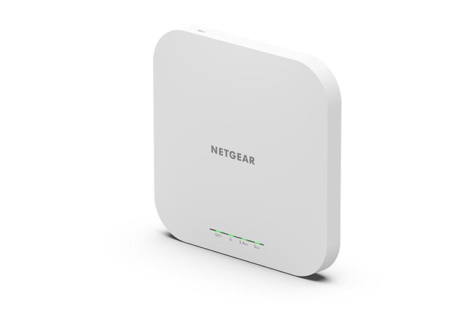
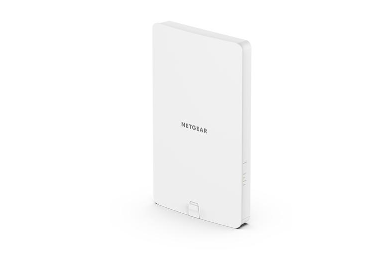
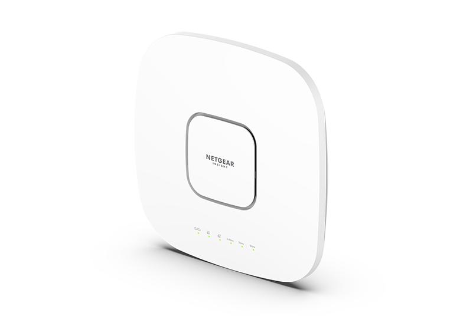

AX1800 Indoor
AX1800 Indoor
AX1800 Dual Band PoE Multi-Gig Insight Managed WiFi
6 Access Point
- Powerful Business WiFi -- Faster and more reliable WiFi due to higher throughput and more coverage with the use of both 2.4Ghz and 5Ghz bands simultaneously.
- Ideal for High Density Environments -- Ultimate WiFi performance for schools, hotels, restaurants, and conference centers.
- Easy Wiring --Extra Wired 2.5Gbps Ethernet port that's backward compatible with 100/1000Mbps Ethernet for easy wiring.
- Greater Network Capacity --Enjoy 4x more connection capacity than your current WiFi and improved efficiency for longer battery life.
- Seamless, Mesh WiFi -- Wire-free installation with other WAX610, WAX610Y, WAC540, or WAC564 creates the perfect seamless business network.
- See More

AX1800 Outdoor
AX1800 Outdoor
AX1800 Dual Band PoE Multi-Gig Insight Managed
WiFi 6 Outdoor Access Point
- Powerful Business WiFi -- Faster and more reliable WiFi due to higher throughput and more coverage with the use of both 2.4Ghz and 5Ghz bands simultaneously.
- Ideal for High Density Environments -- Ultimate WiFi performance for schools, hotels, restaurants, and conference centers.
- Weather Resistant --IP55 rating for water and dust resistance, long sun exposure, snow, hail, frost, etc.
- Seamless, Mesh WiFi --Wire-free installation with other WAX610, WAX610Y, WAC540 or WAC564 create the perfect seamless business network.
- Easy Wiring -- Extra Wired 2.5Gbps Ethernet port that's backwards compatible with 100/1000Mbps Ethernet for easy wiring.
- See More

AX6000
AX6000
AX6000 Tri-Band PoE Multi-Gig WiFi 6 Access Point
- High-Performance Business WiFi -- Faster and more reliable tri -band WiFi 6 with 12 streams and up to 6 Gbps total bandwidth
- Ideal for High Density Environments -- Ultimate WiFi performance for schools, hotels, restaurants, and conference centers.
- Greater Network Capacity -- Enjoy 4x more connection capacity than your current WiFi and improved efficiency for longer battery life.
- Seamless Wireless Mesh -- Wire-free installation with other WAX630, WAX620, WAX610, WAX610Y, or WAC540 creates the perfect seamless business network.
- Multi-Gigabit Speed -- Includes a 2.5 Gbps Ethernet port with PoE++ for high speed and easy wiring and an additional Gbps Ethernet port for wired extension to an WiFi access point or a switch.
- See More